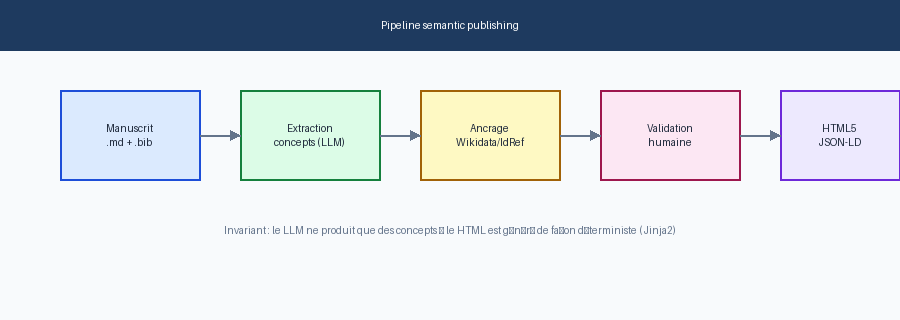
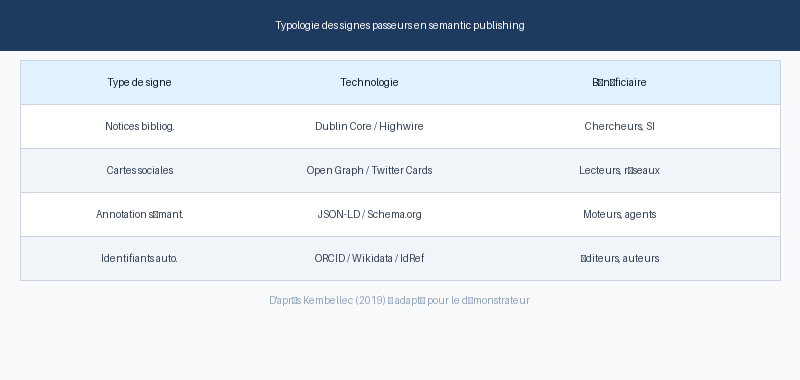
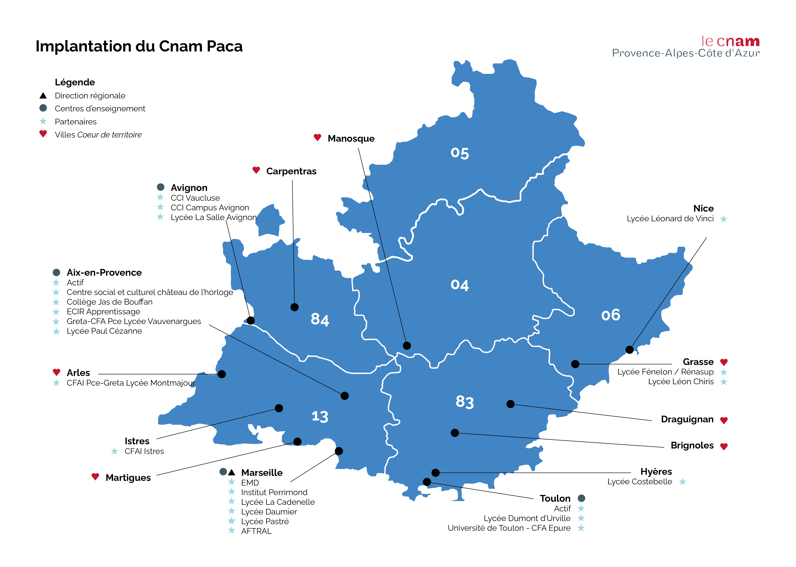

Semantic publishing, la sémantique dans la sémiotique des codes sources d'écrits d'écran scientifiques
Les Enjeux de l'information et de la communication — ISSN 1778-4239 — doi:10.3917/enic.027.0055
Informations sur l'article
- DOI
- 10.3917/enic.027.0055
- Publié
- 2019
- ISSN
- 1778-4239
- Mots-clés
- Semantic publishing, Analyse sémiotique, Code source, Données liées, Écriture numérique, IST, médiation, Médiatisation, documentarisation
- Citer
- Gérald Kembellec 2019. Semantic publishing, la sémantique dans la sémiotique des codes sources d'écrits d'écran scientifiques. Les Enjeux de l'information et de la communication.doi:10.3917/enic.027.0055
Résumé
Les enjeux contemporains de la « mise en média de l'information scientifique » au travers des plateformes du Web, y compris celles du Web social, mettent en tension les questions informationnelles et médiatiques. Les Etats, l'Europe et la communauté scientifique internationale réclament, dans une politique d'ouverture de la science, la mise à disposition proactive des contenus à destination du plus grand nombre. Penser et anticiper la circulation médiatique des productions scientifiques est une gageure info-communicationnelle qui interroge les modalités de mise en œuvre d'une telle politique. En effet, il existe de nombreuses variables à appréhender pour proposer un formalisme qui satisfasse tous les acteurs de l'Information Scientifique et Technique. Comment envisager le design de l'information scientifique et concilier les besoins des différents acteurs de la chaîne de l'IST dans un contexte où il y a autant de facettes à prendre en compte que d'acteurs des documentarisations auctoriale, éditoriale, diffusionnelle et d'appropriation (Zacklad, 2019) ?
Introduction
Dans cet article, nous nous intéressons à la sémiotique du code des écrits d'écran (Souchier, 1996 ; Jeanneret et Souchier, 1999) au sein des plateformes d'édition en ligne d'information scientifique et technique (IST). Nous proposons de mettre l'accent sur les modalités d'exposition des métadonnées liées aux écrits scientifiques, tout autant que sur leurs potentiels usages communicationnels. Pour ce faire, nous reprenons un positionnement qui trouve ses racines dans les travaux sur les raisons « graphique » (Goody 1979) et « computationnelle » (Bachimont, 1999), mais aussi dans la « théorie opérationnelle de l'écriture numérique » (Crozat et al., 2011). Sous ce positionnement nous examinerons l'écriture des articles scientifiques avec une « machine à calculer » (Crozat, 2016), pour des humains et d'autres « machines à calculer » (Crozat, 2016). Les méthodes propres au semantic publishing peuvent-elles proposer, sinon une réelle « rhétorique hypertextuelle » (Saemmer, 2015), tout au moins un réel bénéfice info-communicationnel dans la sphère scientifique ? La question sous-tendue par cette analyse est le bénéficiaire de ces techniques : l'auteur, l'éditeur ou le lecteur ? Ces enjeux médiatiques en information scientifique seront donc problématisés tout autant dans une perspective d'inscription de fragments documentaires que de celle de la documentarisation auctoriale ou encore de celle des industries médiatiques qui éditent et distribuent l'IST, sans oublier enfin celle du lecteur final.
Sémiotique et semantic publishing
Enjeux et opportunités semantic publishing
Le semantic publishing (Verlaet et Dillaerts, 2016 ; d'après Shotton, 2009) est un modèle de publication qui offre de larges possibilités de mise en œuvre de documents numériques auto-décrits et inscrits dans un vaste maillage conceptuel. L'ajout de métadonnées lisibles par les machines permet aux robots et agents logiciels d'appréhender, sinon le sens, tout du moins la structure et le contexte d'un fragment d'information. En effet, ce dernier est inscrit au sein d'un document et plus largement dans un réseau d'autres fragments, concepts ou auteurs. Cette structure est rendue possible grâce à des « référentiels autorités » de désambiguïsation, réputés communs, ne laissant nulle place à l'interprétation, à la confusion typologique ou encore à la polysémie.
Cette rédaction sémantique, hautement technique pour le profane peut se réaliser par délégation scripturaire au moyen de nouveaux architextes. Ces derniers sont de véritables chaînes éditoriales sémantiques offrant une assistance structurelle à la rédaction, convoquant tout à la fois la liaison, l'inscription et la discrétisation des données (Bachimont, 2010 ; Crozat, 2012). Cette nouvelle méthode d'écriture commence à trouver un écho dans le monde scientifique avec des revues nativement numériques comme PeerJ dont les contenus sont individuellement accessibles et parfois sémantisés (Broudoux et Kembellec, 2017). Dans certaines revues, chaque paragraphe, illustration, tableau ou encore analyse de relecteur est identifiable et accessible par une adresse de ressource unique (URI). Chacun de ces fragments est ouvert aux commentaires, eux-mêmes identifiables et donc possibles à lier sémantiquement. Nous avons proposé un modèle (Kembellec et Bottini, 2017) qui descendait plus loin en granularité pour permettre à la fois la typologie et l'identification de fragments d'articles scientifiques en réseau.

Les possibles usages du semantic publishing pour un chercheur-usager équipé, au sens de Bigot (2018), d'un dispositif de lecture augmenté sont multiples. Le lecteur peut ainsi (1) a minima acquérir et indexer automatiquement des notices bibliographiques. Il pourrait (2) encore désambiguïser les propos de l'auteur (3), mieux saisir ses intentions par la typologie des concepts mobilisés ou par la structuration du document en analysant l'agencement des fragments. En effet, le paradigme du semantic publishing qui lie sémantique et sémiotique au sens de Choi (2001), renégocie le document scientifique dans un réseau méta-informationnel qui n'est pas sans rappeler un certain « tissage » pour faire référence à la théorie du texte de Roland Barthes (Simon, 2015 ; Barthes, 1973). Enfin (4), la sémantique des contenus scientifiques offre la possibilité de partager de manière simplifiée l'URL de documents scientifiques sur ses réseaux socionumériques de prédilection avec l'assurance d'une auto-description (Goyet, 2017).
Les deuxième et troisième propositions sont placées au conditionnel, car s'il existe des possibilités de réaliser ce fantasme de chercheur (i.e. Auer et al, 2018), la réalité des pratiques éditoriales scientifiques est encore bien loin d'exploiter pleinement le potentiel réel du Web des données liées. La quatrième possibilité relève plus de la communication que d'une réelle sémantisation de contenus scientifiques, nous y reviendrons dans une analyse sociale de ces pratiques et des potentiels effets à moyen terme.
Pourquoi parler de sémiotique du code ?
Avec le nouveau mode de publication qu'est le semantic publishing, la structuration des contenus d'un article scientifique va au-delà de son simple plan. Les fragments, comme unités de pensées structurées, sont agencés pour construire une réflexion : un plan de type IMRAD va, par exemple, présenter une typologie de parties clairement identifiables quant à leur fonction. Nous avons montré qu'il était possible d'anticiper également d'autres usages à des fragments qui ne se superposeraient pas aux parties ou même aux paragraphes en présentant la péricope, qui est un fragment autonome qui peut avoir une autonomie de sens et peut être transclus (au sens de l'intertextualité) dans un nouveau document sans perte de contexte (Kembellec et Bottini, 2017). Pour descendre encore plus loin en granularité, certains termes ou entités nommées du texte d'un article trouvent possiblement des références définitoires multiples. Par exemple, si sous un angle structuraliste l'on analyse le signifiant « documentarisation », on trouve au sein même des sciences de l'information, en documentation des signifiés différents selon les écoles de pensées. De même, pour les entités nommées, lorsque l'on se réfère par exemple à Christian Jacob, il est aisé de comprendre selon le contexte de l'article qu'il s'agit d'un chercheur en histoire des écritures ou d'un homme politique. Cependant, un outil d'analyse en lecture augmentée fera difficilement cette désambiguïsation sans l'implémentation sémantique d'un référentiel d'autorités comme l'ISNI, VIAF, ORCID ou IdRef.
Pour permettre à un outil de comprendre — tout du moins d'inférer si l'on veut éviter tout anthropomorphisme — qu'une portion de texte, une figure ou un tableau constitue une unité de sens traitant d'un sujet en particulier, il faut que l'auteur puisse expliciter son inférence dans un format compréhensible par la machine : un code source. Goyet rappelait à ce sujet que le code informatique est une écriture (Goyet, 2017 ; Herrenschmidt, 2007), ses composantes en sont donc des signes, d'où la qualification de leur étude de « sémiotique ». En effet, les modalités d'inscription et de signalisation des fragments au sein d'un dispositif éditorial scientifique sont d'importance. Lors d'une lecture attentive, l'usager va comprendre, tout du moins interpréter la pensée de l'auteur et saisir l'agencement de ses réflexions en lien avec ses références. Un outil d'analyse en lecture équipée (ibid) n'aura pas la capacité d'inférence et de rebond rêvée par Bush (1945) dans son Mémex : c'est ici qu'interviennent les signes passeurs de connaissance qui sont mis en œuvre par la conversion techno-sémiotique (Doueihi, 2008) des écrits au moyen de la délégation d'écriture des divers dispositifs scripturaires en ligne (Jeanne-Perrier, 2006). Selon la méthodologie structurelle d'inclusion de métadonnées sémantiques, selon la typologie des acteurs d'autorités de référencement et selon le choix des vocabulaires, l'inscription des fragments informationnels et de leur documentation ne se fera pas de la même façon. Pour clarifier le propos, plusieurs codes sources d'écrits d'écran hypertextes pourront amener au même résultat visuel à l'affichage-écran. Cependant, une analyse sémiotique de leurs codes sources informera le lecteur attentif sur (1) le type d'inférences que souhaite réaliser l'auteur (2), un potentiel parti pris dans la gouvernance des systèmes d'information, mais aussi (3) ses objectifs communicationnels de diffusion de l'information (Sire, 2018).
Sémiotique du code : typologie analytique des signes passeurs en semantic publishing
Nous proposons ici une typologie analytique illustrée de ces divers signes qui exposent la sémantique de leurs contenus en contexte scientifique.

Les signes indicateurs de notices
La première catégorie que nous analyserons est celle centrée sur la signalisation de notices bibliographiques. Les cas d'usages sont liés au repérage et à l'extraction des références.
Les métadonnées d'entête de fichier HTML
Les balises <meta> autorisent l'usage d'un ensemble normalisé de métadonnées, souvent du Dublin Core simple ou qualifié décrivant le document dans lequel elles sont intégrées (Kunze, 1999 ; Greenberg, 2003 ; Turner et Brackbill, 2011). Ce premier niveau de sémantique des contenus ne permet de décrire que le document lui-même de manière monolithique et donc n'expose qu'une seule notice, mais de manière très fine. Cette technique est utilisée par exemple pour exposer un billet de blog de recherche sur Hypothèses.org ou sur Hal et en proposer une indexation éditorialisée. La mise en œuvre des métadonnées embarquées à l'entête du document HTML est très simple : elles sont placées entre les balises HTML <head> et </head>. Chaque balise <meta> comprenant un premier attribut name pour typer la métadonnée et un deuxième attribut value pour donner sa valeur.
Google Scholar encourage l'usage d'autres vocabulaires professionnels de presse comme les Prism Tags ou Highwire Press Tags plutôt que celui du Dublin Core plébiscité par le monde de la documentation. Il est possible donc, à la lecture du code source du document scientifique, d'émettre une hypothèse sur l'objectif éditorial de la documentation de la page. Si les signes passeurs d'information utilisent un ou des vocabulaires préconisés par la firme Google plutôt que ceux du Dublin Core Metadata Initiative, les problématiques de visibilité sont d'une importance au moins égale à la simple mise à disposition de notices pour les chercheurs. L'exemple présenté en figure 1 utilise le vocabulaire Highwire Press Tags.
Le Context Object in Span (COinS)
Le COinS est l'implémentation en HTML de l'OpenURL, norme NISO Z39-88. Il va plutôt avoir pour objectif de mettre en avant la bibliographie du document et non le document en lui-même. Ce type de format de métadonnées, comme leur nom l'indique, s'inscrit uniquement dans des balises « inline » (c.-à-d. sans saut de ligne) de type <span>. Cette balise n'est pas porteuse de sens, son usage est lié au contexte d'utilisation. Ici, l'encadrement par les balises <span> matérialise l'ancrage de métadonnées pour un item de bibliographie ou un appel de citation. L'exemple en figure 2 présente un élément de bibliographie, encadré par des balises <cite> (qui ont intrinsèquement du sens) dans une balise <span>. Si l'on décompose les signes, on remarque que les variables et les valeurs sont séparées par le signe & et que tous les caractères spéciaux sont encodés pour les besoins de l'usage du protocole HTTP. Cette deuxième catégorie de signes passeurs d'information est à considérer comme étant potentiellement : (a) une documentation altruiste afin de faciliter le repérage technique des notices par Zotero ou (b) plus probablement dans le cas des moteurs de recherche ou des éditeurs scientifiques commerciaux comme un service de création de valeur fidélisant le chercheur-usager-client.
Signalisation de termes, entités nommées et fragments
Sire a récemment proposé de présenter les différentes techniques de sémantisation des contenus en ligne (2018), rendant possible leur discrétisation et par là une réelle sémantique des fragments info-documentaires scientifiques. Nous présentons ci-dessous une synthèse sélective de ces modèles applicables en situation de semantic publishing. L'intégration de liaisons descriptives entre autorités, vocabulaires et fragments informationnels est une condition nécessaire à la systématisation de la sémantique des contenus. Cette condition nécessite qu'un certain nombre de prérequis soient remplis et inscrits sous forme sémio-rhétorique faisant ainsi coïncider fond et forme (Bouchardon et al., 2011, p. 14).
- Tout d'abord, les contenus d'un document (ou fragments) doivent, pour satisfaire aux règles du FAIR, former un ensemble discret : ils doivent être accessibles de manière unique à travers d'URI (Bachimont, 1999, p. 200 ; Goyet, 2017, p. 68 ; Sire, 2018, p. 147).
- Ensuite, il convient que chaque élément décrit par l'auteur ou l'éditeur use d'un référentiel composé de vocabulaires, de grammaires, et d'autorités qui soient communes aux différents acteurs — qu'ils soient humains ou machines.
À partir de ces règles fondamentales, il faut analyser les formats qui se fondent sur ce modèle dit de « triplets », pour implémenter la sémantique au sein d'un document scientifique, ce que nous proposons ici. Le moyen le plus habituel est d'implémenter le modèle abstrait Resource Description Framework (RDF) comme méthode de description au sein d'un hypertexte scientifique. Ce modèle est tout à la fois un système de pensée par graphe conceptuel et un langage de description dérivé du XML déclinable en diverses implémentations. Ce système repose sur le concept de triplet évoqué plus haut défini comme l'association d'un sujet, avec un objet au moyen d'un prédicat. Le sujet représente la ressource à décrire, dans le cas qui nous intéresse, le fragment de texte (ou la ressource média dans un sens large : une illustration par exemple). Le prédicat représente un type de propriété applicable à cette ressource, cette propriété étant définie sous la forme d'un élément de descripteur accessible en ligne au travers d'une URL. Enfin, l'objet représente une donnée ou une autre ressource : c'est la valeur de la propriété. L'objet va avoir pour valeur soit un identifiant fourni par une autorité (ISNI, ISBN…) dans ce cas l'on parlera d'URN, soit une valeur textuelle ou numérique dite « littérale », ou encore une URL d'identification sensée définir le sujet documenté. Pour donner un exemple, le sujet du présent fragment textuel a pour prédicat de définir l'objet de triplet RDF. Toutes les méthodes présentées ci-après se fondent sur ce principe de triplet RDF, les éléments de divergence, outre le substrat technique, vont être liés au mode de gouvernance des organismes liés tout autant que les objectifs affichés par lesdits organismes (Sire, 2018).
Le RDFa : le respect des règles institutionnelles
Ce modèle de structure sémantique implémentable au sein du HTML 5 dérive du xHTML (plus précisément du RDF intégré au xHTML). Il est proposé au sein du World Wide Web Consortium (W3C), l'organisme en charge de standardisation du Web, fondé en 1994 par son inventeur et qui se charge de réguler les divers formats informatiques qui y cohabitent. Certaines descriptions peu flatteuses de la gouvernance du W3C font paraître cet organisme comme autocratique : la régulation des discussions appartenant in fine à Tim Berners Lee (Malcom, 2008). Toutefois cette organisation, comme le rappelle Sire, citant Russel, a le mérite incontestable d'éviter que les formats du Web ne tombent sous la coupe des industriels avec des dépôts de brevets (Russell, 2003).
L'intégration du RDFa au sein du HTML5 n'influe pas sur le rendu visuel du document dans le navigateur, sauf à user de plug-ins dédiés à cet usage. Les signes qui permettent de l'implémenter sont facilement identifiables lors d'une analyse sémiotique du code source : des attributs sont ajoutés aux balises HTML et vont indiquer les schémas, vocabulaires ou espaces de nommages convoqués et ainsi décrire et discrétiser les fragments sous forme de triplets. Dans l'exemple fictif en figure 3, la ligne 9 propose au sein de la balise <section> l'usage du schéma « ScholarlyArticle » pour décrire la citation. Il est précisé entre les lignes 11 et 15 que l'auteur est une « Person », pas une institution. De plus, cet auteur est spécifié comme étant celui présenté dans le référentiel d'autorité VIAF sous l'identifiant 40280446, ce qui évite toute ambiguïté d'homonymie. L'humain verra donc l'entité nommée « Lawrence Lessig » inscrite sur son écrit d'écran et aura sa représentation mentale de la personne référée. La machine reproduira une démarche analytique « similaire » grâce au triplet sémantique pointant vers le serveur VIAF : le triangle sémiotique est donc respecté dans la dimension sémantique de Morris pour un usage informatif (Morris, 1946). On remarque aussi un bornage temporel différent de la simple année dans les lignes 17-19 au sein de la balise <date> : son attribut property est renseigné avec temporalCoverage, une durée qui va être valuée à 1999-2001. Cela correspond bien à un équivalent du texte à destination des humains : « le tournant du siècle ».
Les micro-données et la sémantique orientée interaction et référencement : Microdata et Schema.org
Ces métadonnées sont nées d'un désaccord de gouvernance au sein du W3C (Sire, 2018) : d'un côté Tim Berners Lee souhaitait privilégier l'usage du xHTML comme vecteur de sémantisation du Web, de l'autre l'initiative de créer un langage qui l'intégrerait nativement de manière simplifiée : le HTML5. Cela a mené à la création du Web Hypertext Application Technology Working Group (WHATWG) soutenu par Google. Les règles des microdonnées ou microdata sont créées par les mêmes acteurs, qui sont présents dans les deux groupes, mais avec des tensions certaines. Ceci explique une multiplicité des formats d'inclusion de métadonnées et données sémantiques dans le HTML5. Dans un même temps, les principaux moteurs de recherche mondiaux se sont rapprochés pour créer des schémas de description du réel et des référentiels dont l'usage est encouragé dès 2011 par Google comme ayant un impact fort sur l'indexation. Il est cependant possible d'utiliser conjointement aux microdatas d'autres référentiels de description comme le Dublin Core qualifié.
La sémantique des micro-données est portée, outre par les balises HTML5 elles-mêmes, par les attributs suivants :
itemscope: qui signifie le champ sémantique de l'élément ;itemtype: qui précise le type d'élément concerné ;itemprop: définit la propriété de l'objet défini ;itemid: référence un identifiant unique, comme un URN fourni par un organisme d'autorité de type ORCID, ISNI, ISSN ou encore ISBN.
Dans la figure 4, nous avons composé le contenu d'un paragraphe qui fournit une opinion positive sur un article et ce qu'en voit le robot de recherche sémantique de Google. Ici donc, la représentation visuelle du terme « Nous » augmentée de son code source inscrit dans la balise <span> sera traduite par les machines comme : la personne dont l'identifiant ORCID est 0000-0003-3036-6989. Ce dernier cite l'article « Code is Law » et abonde dans le sens de la référence. Nous notons ici aussi un usage informatif des triplets, ce qui semble aller dans le même sens que le RDFa.
La sémantique dans les pages HTML5 et les Notebooks grâce au format JSON-LD
Une dernière méthode que nous analyserons est le format JSON-LD qui s'intègre à la page HTML, soit dans l'entête, soit dans un fichier à part qui sera chargé par le navigateur (avec un plug-in) ou le moteur d'indexation. Ce format de code source a pour avantage certain une forte compacité qui n'alourdit pas le code source HTML tout en autorisant une description fine de la page, tout en étant décorrélé du code de celle-ci. Dans ce cas précis, le sens du code est le même que pour les microdonnées et l'analyse par le moteur est la même. Notons que le format JSON-LD est utilisé dans le cadre de la documentation des différents fragments d'un notebook en science reproductible de type « JupyterHub ».
Les signes communicationnels à destination des médias sociaux
Les documents en ligne peuvent également intégrer un type de métadonnées reconnaissables par les principaux médias sociaux qui fonctionnent tous sur le même modèle : une description du document comprenant les informations générales telles que le titre, l'URL, les auteurs, une illustration et un résumé (Goyet, 2017). Ces métadonnées s'implémentent sous deux formes : L'Open Graph et les Summary Cards de la famille des Twitter Cards. Le protocole Open Graph (http://ogp.me/) est à destination de Facebook et de LinkedIn. Basé sur le RDFa et créé par Facebook, Open Graph permet à toute page Web de devenir un « objet riche dans un graphe social » (Haugen 2010). Haugen décrit ce protocole comme conçu pour être « utile à tout le monde », ce qui explique son usage par LinkedIn par exemple. Il est à noter qu'il existe une fonctionnalité du gestionnaire de contenus WordPress pour en automatiser l'intégration dans les billets, ce qui peut être in fine applicable à des documents scientifiques ou des carnets de recherche par exemple. Les Twitter Cards de type summary card sont, dans les mêmes conditions, porteuses d'un discours d'accompagnement du document hypertexte en ligne, mais à destination exclusive de Twitter.
Dans les deux cas cités, grâce aux signes inclus dans l'entête de la page support, si l'URL du carnet de recherche ou de l'article en ligne est publiée sur un média social, une illustration et un texte seront les supports visuels de l'hyperlien. L'exemple, adapté de l'entête du code source HTML d'un article de la revue en ligne PeerJ, présente un aperçu des signes qui permettent de faire circuler les principales informations de l'article sur les réseaux sociaux : un visuel, le titre et un résumé court en plus de l'hyperlien. Il ne s'agit pas là d'une exposition de notice, mais bien d'un « teaser » invitant à un engagement pour reprendre un terme issu du marketing numérique.
Discussion sur l'usage du semantic publishing
Des questions émergent alors sur l'impact que l'intégration de ces nouvelles méthodes d'inscriptions numériques en ligne a sur la chaîne des acteurs de l'IST : auteurs, éditeurs, lecteurs. Quels en sont les réels enjeux implicites pour le monde, au sens large, de la recherche ?
Formats, référentiel et gouvernance, une impossible neutralité
Goyet (2017), interprétant Lessig dans son célèbre article « Code is Law » (1999) avait avancé que les choix concernant l'écriture du code ne sont pas neutres : ce sont des choix techniques bien sûr, mais aussi de convictions. Nous avons présenté que des scissions ont pu intervenir dans les organismes de standardisation du Web pour des questions de gouvernance, de conflits personnels et d'éthique. Outre les potentialités techniques, qui ne sont pas neutres, ce choix est porteur de valeurs morales et culturelles. Donc, sans prendre part à ces débats, l'usage d'un type de modalité d'ancrage des données (xHTML vs HTML5) et métadonnées (RDFa vs Microdonnées ou JSON-LD) positionne l'acteur, possiblement à son insu. De plus, le choix des modèles de données se rajoute comme facteur positionnant l'acteur : une utilisation de schema.org pourrait être perçue comme féale au conglomérat des moteurs de recherche, alors que celle du Dublin Core pourrait être plébiscitée moralement, mais discutée techniquement. Enfin, le choix des autorités d'identification n'est absolument pas neutre non plus : si les autorités communiquent, l'adhésion à l'une ou l'autre peut parfois se faire sur des facteurs aussi triviaux que le chauvinisme : en effet certaines autorités sont nationales, d'autres étrangères ou encore internationales (Boulet, 2016). Ces analyses de solutions de formats, de référentiels et d'autorités sortent de la sphère technique et toute proportion gardée, sont assez comparables aux discussions passionnées d'adhésion entre usagers de systèmes libres et propriétaires. Il existe une multitude de paramètres à prendre en compte dont l'utilisabilité, les politiques institutionnelles et nationales, tout autant que les réalités du marché de l'édition et des usages de chercheurs. Lors de telles discussions, il faut s'attendre à une analyse critique des dispositifs d'écriture et de mise en ligne de documents scientifiques sur des aspects qui sont bien éloignés de la recherche.
Apports pour les chercheurs : alignement sur les primitives savantes de la recherche
Pour la première fois dans l'histoire des savoirs scientifiques, la sémantique des contenus est privilégiée à la simple évolution d'une grammaire visuelle issue de la mémoire « de formes » des supports d'inscription précédents (Jeanneret, 2006).
Nous avions précédemment présenté les fonctions les plus habituelles de l'action et de la coopération en termes de recherche, d'analyse, de synthèse et de partage de l'information scientifique (Kembellec et Bottini 2017) au travers des primitives savantes du métier de chercheur par une synthèse de la littérature (Unsworth, 2000 ; Palmer et al. 2009 ; Hennicke et al. ; Nakakoji et al. 2005). Nous proposons ici, une mise en relation des principales primitives avec les signes passeurs du semantic publishing évoqués précédemment. Les parties offrant un réel bénéfice informationnel en contexte scientifique peuvent être une désambiguïsation conceptuelle ou des éléments de structuration documentaires signalant la nature ou la fonction d'un fragment sémantique hyperliable.
Prospective sur le semantic publishing
Les bénéfices du semantic publishing pour la compréhension et la circulation des savoirs scientifiques sont évidents, le temps héroïque du Web 1.0 est bien révolu et les écrits d'écran ne sont plus le seul vecteur de communication numérique en réseau.
Au-delà même des réflexions d'usages, d'enjeux et de techniques, cette tendance de renouveau en médiation de l'information scientifique offre une proximité conceptuelle partielle avec un Mémex scientifique. Avec les facilités computationnelles et interprétatives offertes par le semantic publishing et l'assistance d'outils de lecture adaptés, il semble évident que de nouvelles possibilités de conversion de données en connaissances s'ouvrent (Gartner, 2016, p.10). L'ambiguïté entre les termes et également entre les entités nommées disparaît, les fragments informationnels sont décrits et reliés : on assiste à la naissance d'information enrichie et découvrable avec davantage de visibilité et de citabilité.
De nouvelles métriques en citation ?
Avec la discrétisation des appels de citation (ou des bibliographies d'articles en ligne), un affinage des contextes de citation ouvre la perspective d'une possible (re)théorisation de la citation en prenant en compte des métriques qualitatives autres que celles initiées par Garfield (1955, 1972) puis par Hirsch (2005) : l'emplacement de la citation (Bertin et Atanassova, 2018), l'intention de l'auteur (Xiao et al. 2018) qui peut être perceptible par un modèle de rhétorique du code similaire à celui de l'hypertexte tel que théorisé par Saemmer (2012, 2015).
De nouveaux architextes scientifiques ?
Ce scénario prospectif de la publication scientifique en ligne ne peut s'envisager qu'avec des outils d'édition, d'inscription, d'interaction et les équipements de circulation (Goyet, 2007). À ce jour, malgré quelques preuves de concepts (Capadisli et al. 2015, Kembellec et Bottini, 2017), il reste encore à mettre en œuvre et à déployer un réel architexte scientifique pensé pour la sémantique des fragments by design pour aller dans le sens du What You See Is What You Mean cher à Crozat. De plus, il ne peut exister de documents scientifiques en ligne dont les fragments sont reliés entre eux que si lesdits documents sont accessibles : l'Open Access en édition scientifique est donc un prérequis au semantic publishing, point encouragé, voire prescrit par les politiques nationales et européennes.
Un travail considérable de documentarisation doit être pensé pour réaliser ce type d'enrichissement et il ne peut être pensé que par l'auteur ou en relation avec l'auteur pour ne pas dénaturer sa pensée. Il faut se poser la question de l'engagement des acteurs de l'IST : les auteurs seraient-ils prêts à réaliser eux-mêmes ou participer à la qualification sémantique s'ils en saisissent les enjeux et les avantages ? De même, les éditeurs privés ou institutionnels veulent-ils se saisir et financer ce genre de problématiques ? Nous estimons que des projets de recherche en semantic publishing comme NumeRev (https://numerev.com/) ouvriront une voie dans cette direction.
Les points de vigilance
La diffusion et la communication des articles scientifiques sont devenues des enjeux en dehors même des cercles scientifiques. Le célèbre publish or perish toujours d'actualité côtoie d'autres réalités dues à l'explosion de l'offre en littérature scientifique ainsi qu'à la nécessité de vulgariser et d'exister dans la sphère publique : on parle maintenant aussi de Get Visible Or Vanish, de Deploy Or Die et même de Publicize Or Perish. La diffusion se réalise aussi par les moteurs de recherche grand public, les blogs de chercheurs et les réseaux sociaux. Pour ces supports de diffusion, qu'ils soient grand public ou dédiés à la science, l'enjeu communicationnel devient tellement important que de nouvelles métriques comme les altmetrics s'invitent dans l'espace du monde social de la recherche. Les méthodes d'indexation naturelles actuelles privilégient la qualité du formalisme et la sémantique de description des contenus au même titre que les contenus eux-mêmes (Kembellec, 2016). Dès lors, la sémiotique du code permet de questionner la limite parfois ténue que l'on peut établir entre formalisation (scénarisation) et publicisation (mercatique) des articles scientifiques sur les plateformes d'édition et sur les blogs de chercheurs. Les règles du FAIR préconisent que la donnée scientifique soit « trouvable, accessible, interopérable et réutilisable » respectant ainsi les enjeux de l'Open Data Scientifique (Moore, 2014 ; Wilkinson et al., 2016, Schöpfel, 2018). L'effet corolaire de cette structuration est, en plus d'obtenir un pagerank élevé pour les moteurs de recherche, d'ouvrir des perspectives communicationnelles extérieures au document au travers du réseau des médias sociaux (Infante-Moro et al., 2015). Sans procès d'intention des chercheurs et des éditeurs de plateformes de diffusion en IST, il convient de mettre en garde la communauté contre une possible confusion entre « industries médiatiques » et « médiatisantes ». Cette tentation peut être inhérente à la pression d'évaluation des chercheurs, mais aussi à leurs « égos » (Anderson, 2014, Branford et Mallucci, 2015). Cela procède de ce que Jeanne-Perrier (2015) identifie comme une redondance informationnelle à vocation de « lobbying discursif et sémiotique ». Il convient, a minima, de prévenir des tentations de détournement d'usage de ces signes passeurs : entre médiation et médiatisation, que le fond et la forme gardent chacun la place qui leur revient.
Enfin, il faut questionner la délégation d'écriture scientifique à de futurs architextes de semantic publishing qui pourrait brider l'innovation intellectuelle et les ruptures scientifiques par l'usage de référentiels trop rigides, laissant peu de place à la pensée singulière qui ne saurait être référencée faute de préexister. En termes de lecture « augmentée », il est à envisager également que l'esprit critique soit possiblement bridé pour les mêmes raisons. Ce point est crucial, car il faut également discuter sérieusement le semantic publishing sous l'axe de la liberté d'interpréter et de l'esprit critique, mais aussi de l'éthique. En effet, que penser des différents référentiels utilisés par les descriptions conceptuelles de primitives sémantiques et les identifications systématiques ? Qui les édite ? Avec quelle liberté ? Leur sélection a-t-elle (vraiment) une importance ? Autant de questions dont la communauté de l'IST devra se saisir pour revendiquer une autonomie de pensée en contexte de publication sémantique en réseau.
Conclusion
Cet article a établi l'intérêt de l'analyse sémiotique des codes sources d'écrits d'écrans comme porteurs de sens pour les auteurs, éditeurs ou lecteurs. En effet, les sélections des types de signes passeurs, la méthode de fragmentation et les référentiels d'autorité sont autant de choix qui ne sont pas neutres. Dans la focale du semantic publishing, leurs usages répondent à des besoins scientifiques précis en termes informationnels et communicationnels, tant pour l'auteur, l'éditeur que pour le lecteur. Dans un même temps, ils positionnent parfois l'auteur ou l'institution éditrice dans un contexte complexe dont les enjeux en matière de gouvernance peuvent être perçus comme « engageants ».

Nous conclurons en reprenant au compte du semantic publishing deux idées à mettre en tension. D'un côté Saemmer, reprenant Mesquita, questionnait en situation de Web-journalisme l'évolution d'un usage auctorial de l'hypertexte. Elle convoquait des courants de pensées critiques : l'émergence d'une « vérité dialogique » entre la forme et le fond par des anticipations de pratiques de lecture (Saemmer, 2015 ; Mesquita, 2005). De l'autre côté, nous avons évoqué la crainte de voir se renforcer des usages du semantic publishing à visée uniquement diffusionnelle : cela irait dans le sens d'une « circulation circulatoire de l'information », sur le modèle des médias traditionnels fustigés par Bourdieu, induisant une uniformisation et un appauvrissement de la pensée (Bourdieu, 2002 ; Rebillard, 2006). La vérité du semantic publishing se trouvera certainement à mi-chemin, entre structuration documentaire forte, avec des données décrites et liées, mais aussi une tentative d'influer sur le calcul des métriques de référencement de moteurs de recherche et des médias sociaux, scientifiques ou non. Cette supposition augure d'un inévitable débat au sein de la communauté des SIC entre les enjeux communicationnels et informationnels relatifs à la médiation et la circulation des productions du semantic publishing en contexte scientifique.